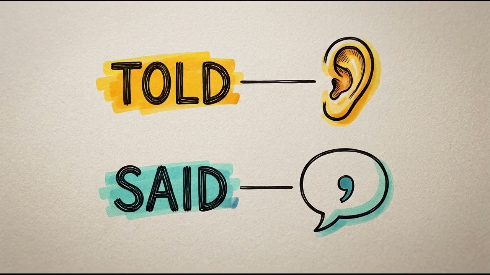
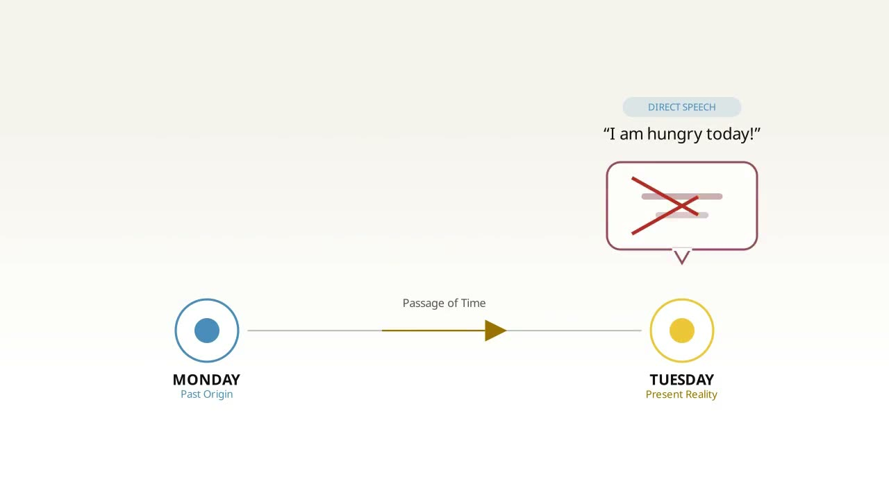
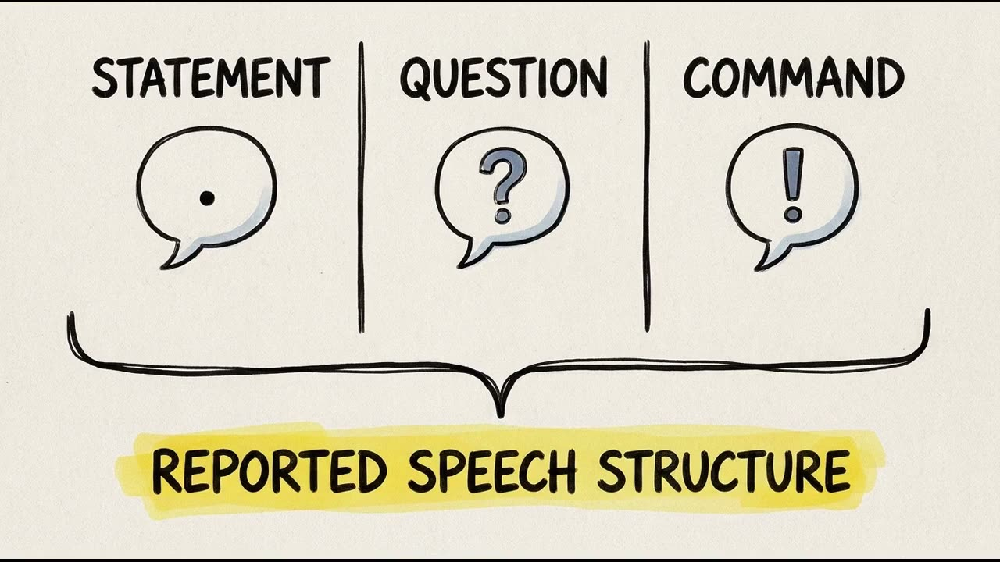

Phase 1 · 5 minutes
Spot the changes
A school newspaper reports what people said. Compare the exact words with the article. Tap every word that has changed, then check.
DETippe alle Wörter an, die sich im Bericht verändert haben.
Phase 2 · 12 minutes
How reported speech works
Watch the explainer. Note down the three things that change and the three kinds of sentences we can report.
DEAchte auf: Person, Zeitform, Zeit- und Ortsangaben – und auf Aussagen, Fragen und Aufforderungen.
After the video
Phase 3 · 18 minutes
The rules
Six rules. Read each one and answer the questions underneath before you go on.
A The five-step recipe
- 1Take away “ ”No quotation marks.
- 2Choose the verbsaid · told + person · asked
- 3Change pronounsI → he / she
- 4One step backam → was
- 5Time & placetoday → that day
English is different from German. German uses the Konjunktiv: Tom sagte, er spiele gern Fußball. English has no Konjunktiv here: the verb goes one step back. Tom said he liked football.
B say or tell?

| Verb | Pattern |
|---|---|
| said | said (that) + sentence Tom said (that) he was tired. |
| told | told + person + (that) + sentence Tom told me (that) he was tired. |
told always needs a listener: told me, told us, told his mum. said never has a person after it: She said me …
No comma before that. German: Sie sagte, dass … – English: She said that …
C Tenses: one step back
| Direct speech | Reported speech | Example |
|---|---|---|
| present simple: “I like pizza.” | past simple | He said he liked pizza. |
| present progressive: “I am watching TV.” | past progressive | She said she was watching TV. |
| past simple: “I saw a film.” | past perfect | He said he had seen a film. |
| present perfect: “I have finished.” | past perfect | She said she had finished. |
| will: “I will help you.” | would | He said he would help me. |
| can: “I can swim.” | could | She said she could swim. |
| must / have to: “I must go.” | had to | He said he had to go. |
| going to: “We are going to win.” | was / were going to | They said they were going to win. |
Past perfect = had + 3rd form (had seen, had gone). In everyday English the past simple is OK too: He said he saw a film.
No change when you report right now (Mum says dinner is ready.) or when it is still true (He said the Earth goes around the sun.).
D Time and place words

| Direct | Reported | Direct | Reported |
|---|---|---|---|
| now | then | tomorrow | the next day |
| today | that day | last week | the week before |
| tonight | that night | next week | the following week |
| yesterday | the day before | two days ago | two days before |
| here | there | this / these | that / those |
Change them only when the time or place is really different. On the same day, today stays today.
E Questions and commands

Statement
“I’m tired.”
said (that) …
told me (that) …
She said she was tired.
Yes/no question
“Are you OK?”
asked (me) if …
She asked me if I was OK.
Wh-question
“Where do you live?”
asked (me) where / what / who / when …
She asked me where I lived.
Command
“Sit down!” · “Don’t shout!”
told me to … / told me not to …
He told us to sit down.
Reported questions are not real questions: normal word order (where I lived, where did I live), no do / does / did, no “?”.
Requests: “Please help me.” → She asked me to help her.
DEEr sagte mir, ich solle das Fenster öffnen. → He told me to open the window.
F Watch out! Typical mistakes of German speakers
Phase 4 · 20 minutes
The report
The case
On Monday, somebody shared an embarrassing photo of Jonas (15) in the class chat. Many students laughed and forwarded it. On Wednesday, the class teacher, Ms Becker, talked to the class.
Today is Friday. You write a report for the school’s anti-bullying team. Write what each person said on Wednesday in reported speech.
DEDu schreibst am Freitag einen Bericht. Denk an Person, Zeitform und Zeitangaben.
A The statements 12 min
B said, told or asked? 4 min
C Correct the report 4 min
A classmate wrote these sentences. Which version is right?
Word Master · 10 minutes
Word Master
Write the twelve sentences in reported speech. Tap Check all, then save the PDF and send it to your teacher.
DESchreib die Sätze in der indirekten Rede. Dann „Check all“ und als PDF speichern.
Extra practice
Watch it again
A short video that explains reported speech step by step. Watch it at home or when you are finished.